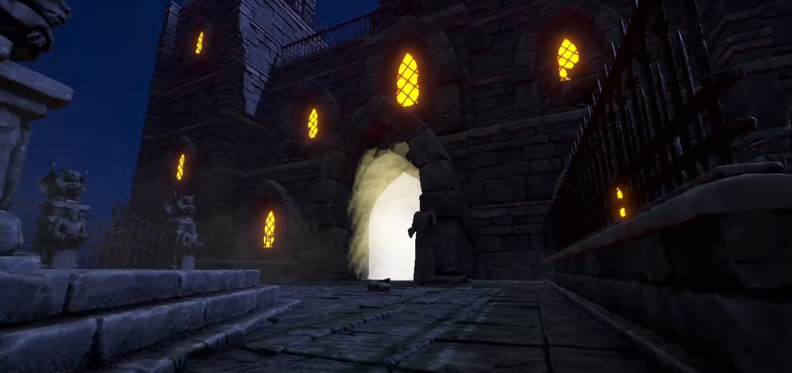

A four-week Soulslike made at Futuregames. I built the enemy state machine used by every enemy in the game, the elemental system, and the first version of the player character's warp-motion-inspired system.
- Team
- Futuregames Team 6
- Duration
- 4 weeks
- Genre
- Soulslike
- Tech
- Unity, C#
A state machine for every enemy
I built a two-tiered state machine that designers could easily configure in the editor, using weights and attack pools to shape how each enemy fights.
It was used on every enemy in the game.
How the state machine works
Short excerpts from the source. The full project is on GitHub.
public enum FsmEnemyStates
{
Idle,
Patrol,
Combat,
Dead,
Stunned
}
public enum FsmEnemyCombat
{
CombatIdle,
MoveTo,
MoveAway,
AttackCombo,
LightAttack,
HeavyAttack,
RangedAttack,
JumpAway,
JumpToPlayer,
Hit,
KnockedDown
}The two tiers. The main states decide what the enemy is doing overall. Once it's in combat, a second tier of combat states decides its next action.
[Header("We use this value to prioritize actions when several are available, higher value = more important")]
[Range(0.001f, 9f)]
[SerializeField] public float stateWeight = 4f;
[Header("The time it takes before we can enter this state again")]
[SerializeField] private float stateCooldown = 2.5f;
[Header("Is distance a factor for activating this state?")]
[SerializeField] private bool useDistance = true;
[Header("The closest we can be to target to activate the state")]
[SerializeField] public float minActivationDistance = 1f;
[Header("The furthest we can be to target to activate the state")]
[SerializeField] public float maxActivationDistance = 10f;Each combat state is a component that designers add to an enemy and tune in the Inspector: its weight, its cooldown, and the distance range it can be used from.
float minWeight = 0f;
FsmCombatState bestState = null;
foreach (FsmCombatState state in avaliableCombatStates)
{
if (state.stateWeight > minWeight)
{
minWeight = state.stateWeight;
bestState = state;
}
}
if (bestState == null)
{
return m_combatIdleStates[0];
}
return bestState;Choosing the next action. The enemy gathers the combat states it can enter right now, from its attacks first, then movement, then idle, and picks the one with the highest weight.
Elemental system
Much of my time went into the elemental system, which interacts with both enemies and objects in the world.
Player character
I wrote the initial warp-motion-inspired system for the player character, which another programmer then developed further.
Looking back
Venator was developed over four weeks and was overscoped from the start. Combat and game feel suffered for it, and we should have prioritized them much more. We knew we were overscoping going in, but kept going against our better judgement.